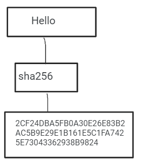
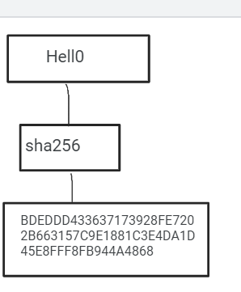

Everyone seems to be talking about cryptocurrency these days and how they are the reason that everyone seems to be hoarding graphic processing units inside their basements and using it to “Mine” bitcoin...quite an interesting topic right? Mining wealth out of thin air.
What is a cryptocurrency

Okay so, cryptocurrencies are digital assets designed to work like a medium of exchange just like other currencies But the difference is that a crypto currency is usually decentralized meaning that it is not controlled by any government, individual or any regulating authority. Like banks that deal in normal currency they keep a record of the money that is being handled, so where is all the data for any cryptocurrency being recorded?
The Blockchain
Turns out that all this is being recorded inside a global ledger, this global ledger is distributed to thousands of devices that run a special software, during a transaction these computers record the special addresses of the receiver,sender and also how many units were exchanged then they write it on a ledger, this ledger is updated in all other computers in this network. This ledger is called a blockchain. Each and every transaction is verified and recorded onto the blockchain by multiple devices, the devices in this network keep on comparing their copies of the blockchain to other devices to check whether they are running in sync with the latest version or not. Do you know what the current size of the bitcoin blockchain is? 347.86 GB on May 31 2021 The bitcoin blockchain was served to public in 2008, since then it has expanded To 347.86 GBs in a span of 13 years. After an entry has been recorded on the ledger it cannot be changed.The blockchain is totally immutable. This brings the question, why can’t I give myself plenty of bitcoins or forge them easily? That is because of the complex verification that is used before a transaction is recorded on a blockchain.
verification
The verification part of these transactions is what is being performed by miners. Miners connect to this network and run special softwares that run by grouping the recent transactions into blocks which are only accepted by the rest of the network if they are hashed correctly, otherwise the rest of the network may see it as an invalid entry and prevent it from being recorded into the blockchain hence: “The transaction never happened” In the case when the block does get accepted into the block-chain,the network generates a bitcoin as a reward that goes into the miner's wallet.
Hashing
Here we come to the interesting part, hashing is the process which has made the whole blockchain system intact, robust and tamper proof. Hashing is a simple process of passing data through a mathematical algorithm to alter it in such a way that it becomes unreadable. The definition that i provided might seem similar to the term encryption, however if i hash some data it can then never be “un-hashed”, meanwhile data that has been encrypted can always be decrypted into a readable state. “51279E103DBFFCCB8C5A33CE971DF867E9D00A 7824F3565B26F3B741E40D4” This collection of random digits and alphabets that you definately did not read is an example of hashed data. What is inside the double quotes? You will never know. There are many algorithms which are used to do this, most blockchains use sha256. This is because sha256 is an algorithm that will always generate a 64 digit hash. When I hash a word, a hash will be generated for it, if I make a small change to that word like if I make one alphabet in that word from lowercase to uppercase the whole hash that will generate will change character by character. Like in the 2 photos below, You can see that both the hashes for the letter "hello" and "hell0" the hashes generated are completly different.
 How does this hashing make the blockchain secure?
Like i told before, transaction records are hashed in blocks, after which they are recorded in the blockchain. These blocks are stored in a specific sequence, each block has 2 different data-sets, one is the data of the transaction block, the second is what we call a “Hash pointer”. A hash pointer is nothing complex but just the hash of the block behind it. So if Block-A and Block-B are in a chain, Block B will contain the hash of the transactions and also the hash of A’s transactions. Why this? Well this is because the hash pointer indicates the position where block B is meant to be placed. Let’s say i try to to alter details of a bitcoin transaction between me and a person(Scott), If the original transaction said that “Scott gives me 1 bitcoin” then this gets stored in block 1 and i try to alter it to “Scott gives me 3 bitcoins” Now the hash in block 1 gets changed completely, so which means that the “Hash pointer” which will be in the block 2 will not match. This disables block 1 and block 2 from attaching in the blockchain, so now where will my forged block 1 go in the blockchain? The answer is no where.